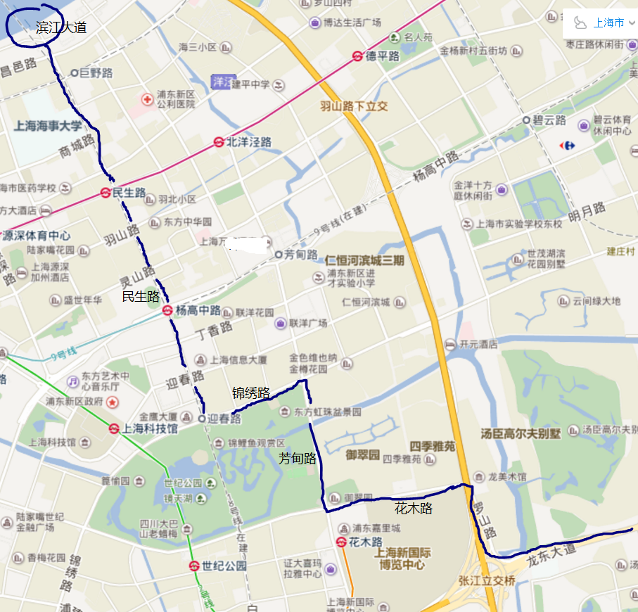
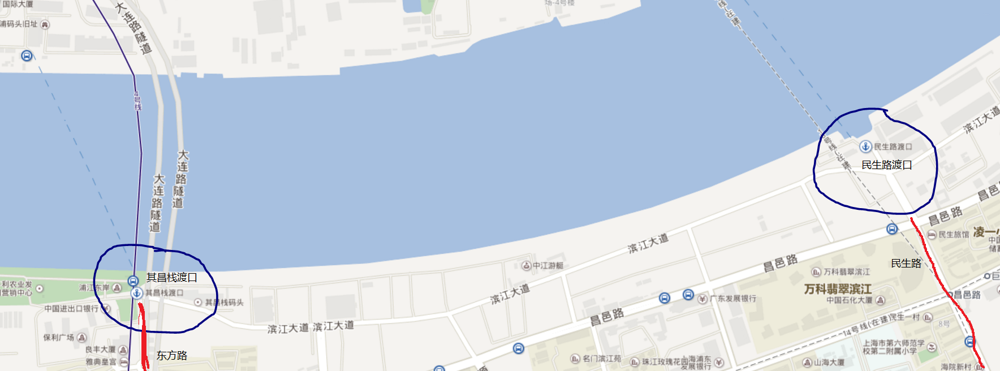
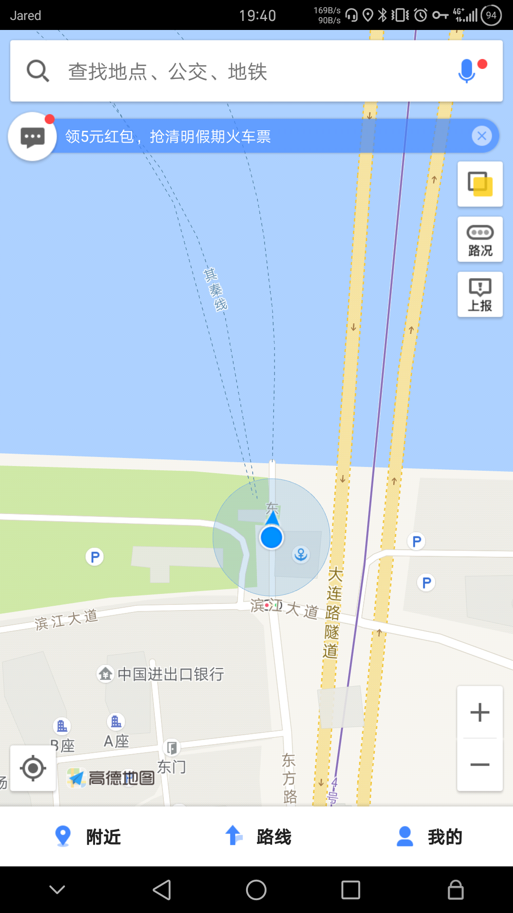

上海轮渡夜间运行渡口
之前总是吃这个亏，夜间骑行渡江可能会找不到渡口，经常担心去了浦东晚上回不来。所以从今天起要注意收集这个资料。
今天骑得不长，从张江到同济大学，浦东部分走的路线大概有是龙东大道——罗山路——花木路——芳甸路——锦绣路——民生路，然后到了民生路渡口， 大概位于民生路和滨江大道路口，画个路线图：

当时大概晚上七点多，但是渡口已经关了（不明原因），于是沿着滨江大道向西南行进，当时想这一路的渡口很多肯定有没关的， 结果幸运的是下一个渡口就开着，也就是“其昌栈渡口”，位于东方路和滨江大道的交界处，位置如下，现在可以确定至少在这个季节，它是开到十一点的。



这个渡口过了江就简单了，大连路走到四平路然后就到学校了。
当然之前晚上渡江都是走的同一个渡口，我现在还真记不清是哪个了，查看了一下地图，可能是杨家渡渡口，位于张杨路和滨江大道路口，地图如下。

为什么还有印象呢，因为有一次骑行在滨江大道遇到了一对父子很有趣。我先是骑到了东昌路渡口，位于东昌路和滨江大道路口，那里的渡口晚上还开着， 但是不能走自行车，很郁闷，这时候有个保安大叔跟我说，你看那对父子了吗，跟着他们走，他们也要渡江，所以跟着他们一路骑到了杨家渡渡口， 小朋友很有趣，给我印象很深。当然这个我现在不太确定，下次再走走看吧。
总之现在至少有两条线可以渡江了，以后就不用担心咯。